LUIS GERMÁN PARISOTTO / PORTFOLIO 2026
DISEÑO
QUE SE
VIVE.
Dirección de arte, identidad y experiencias de marca. Del concepto visual a los espacios, objetos y campañas que las personas viven.
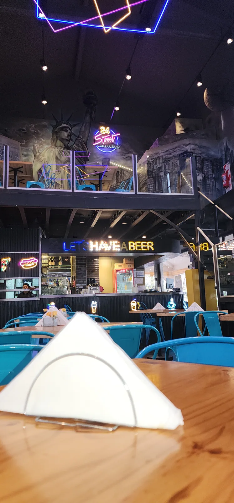
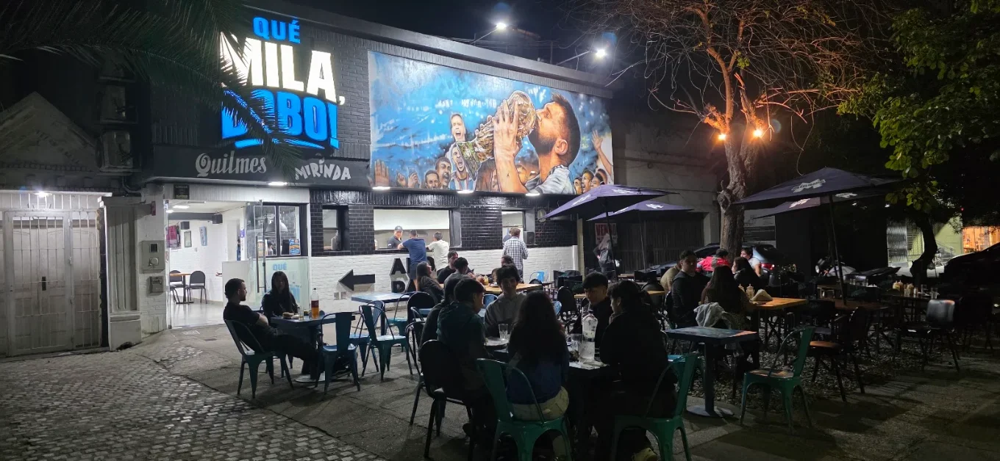

LAS IDEAS
EN ACCIÓN.
Identidades que salen de la pantalla: llegan a un local, a un producto, a una campaña y a la experiencia de las personas.
Proyectos destacados
07 / CASOS PARA EXPLORAR
24
STREET.
↗Una identidad. Múltiples experiencias.
QUÉ MILA,
BOBO!
↗Del diseño conceptual a un espacio real.
JUMM
PARK.
↗Color que invita. Energía que se contagia.
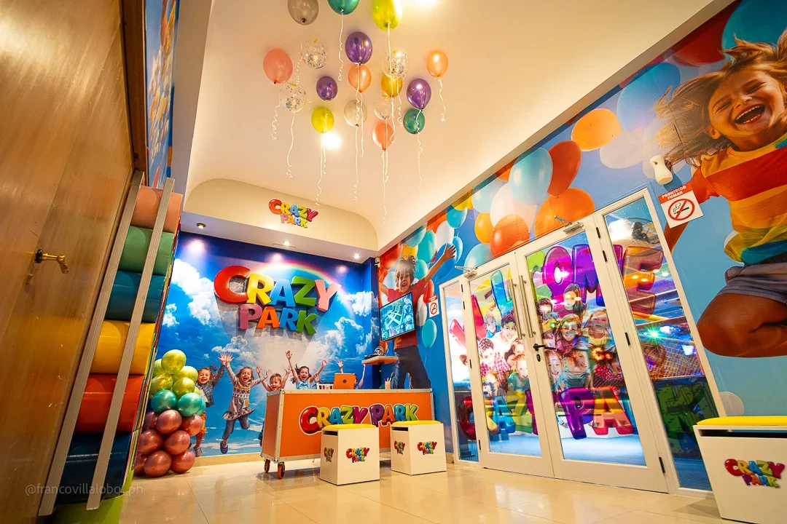
CRAZY
PARK.
↗Color en movimiento. Diseño que se vive.
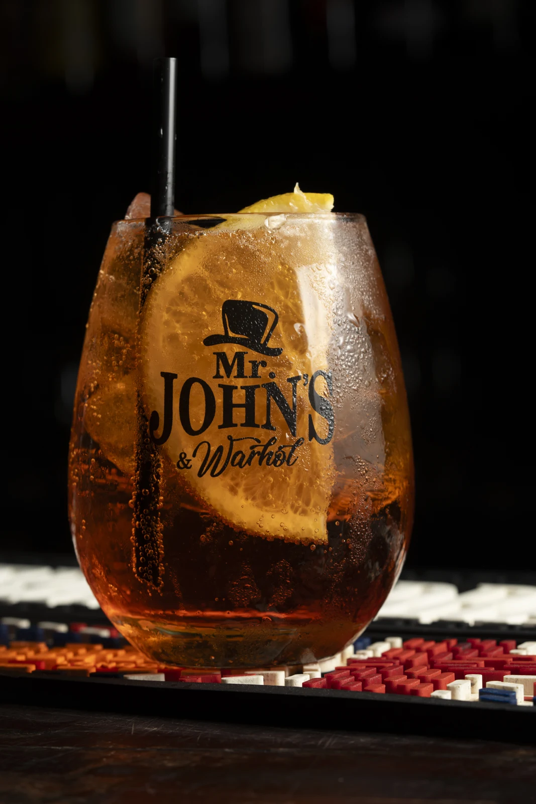
MR
JOHN’S.
↗El carácter de una marca. El pulso de la noche.
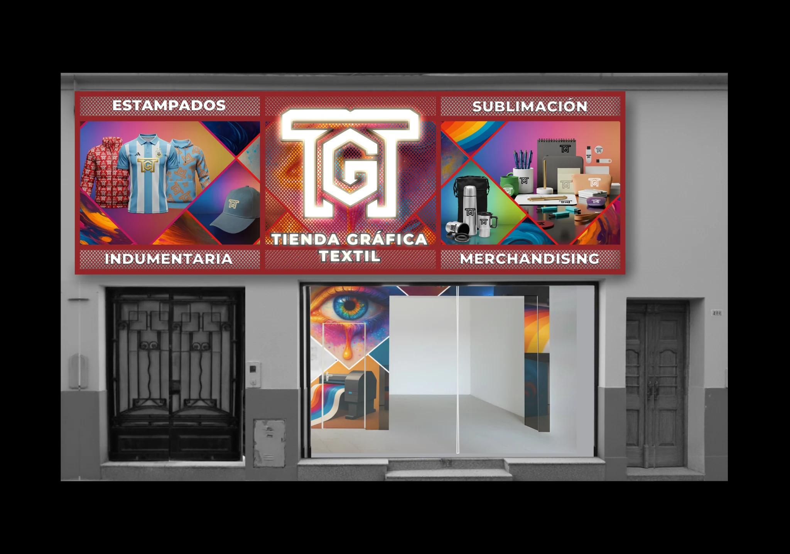
TGT.
↗Tienda Gráfica Textil.

TERZO.
↗Una mesa. Muchas historias.
Más proyectos
10 / DISEÑO & COMUNICACIÓNUna mirada a otros proyectos editoriales, conceptuales, culturales y de comunicación de marca.
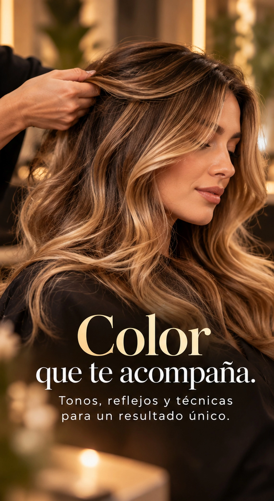
ARTIST
MEDRANO.
↗Belleza con identidad.

METALAR.
↗Comunicación para el sector industrial.
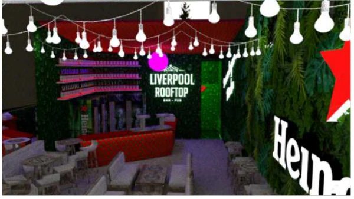
LIVER
POOL.
↗Carácter británico. Una identidad para habitar.
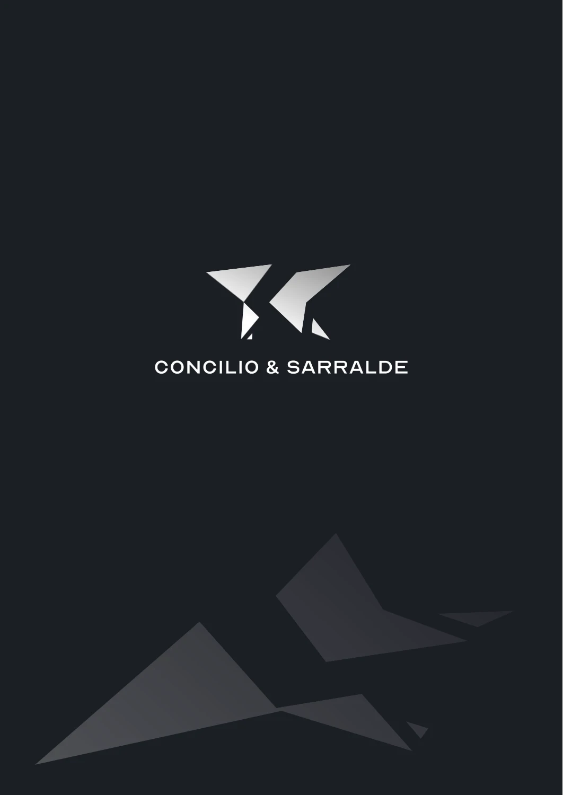
CONCILIO
& SARRALDE.
↗Brochure institucional.
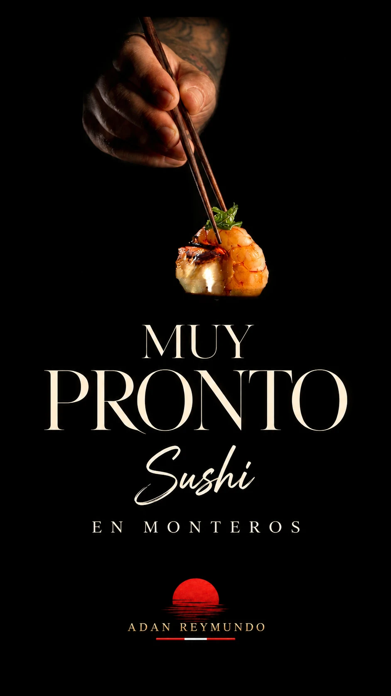
ADAN
REYMUNDO.
↗Sushi en Monteros.
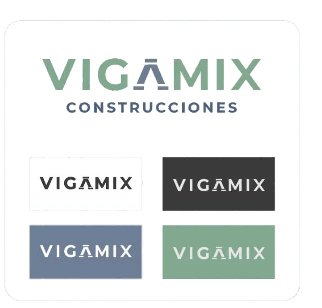
VIGAMIX.
↗Marca, web y redes.
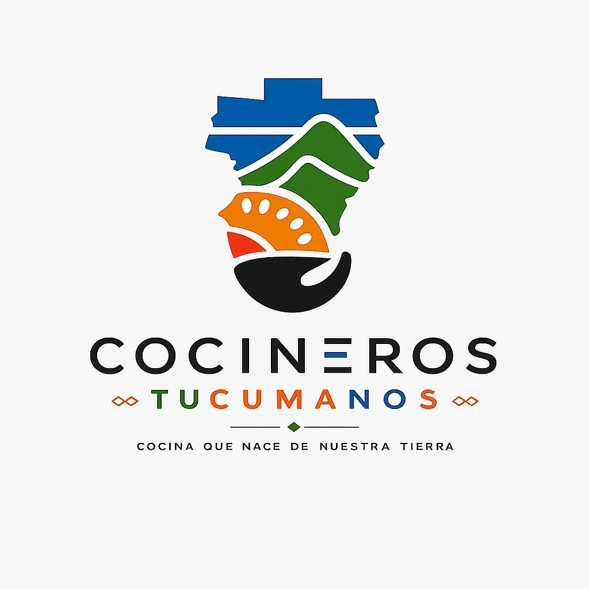
COCINEROS
TUCUMANOS.
↗Cocina e identidad tucumana.

CPA.
↗Sistema de créditos.

PUERTO ARGENTINO
/ CRISTO B.
↗Carta y piezas de mesa.
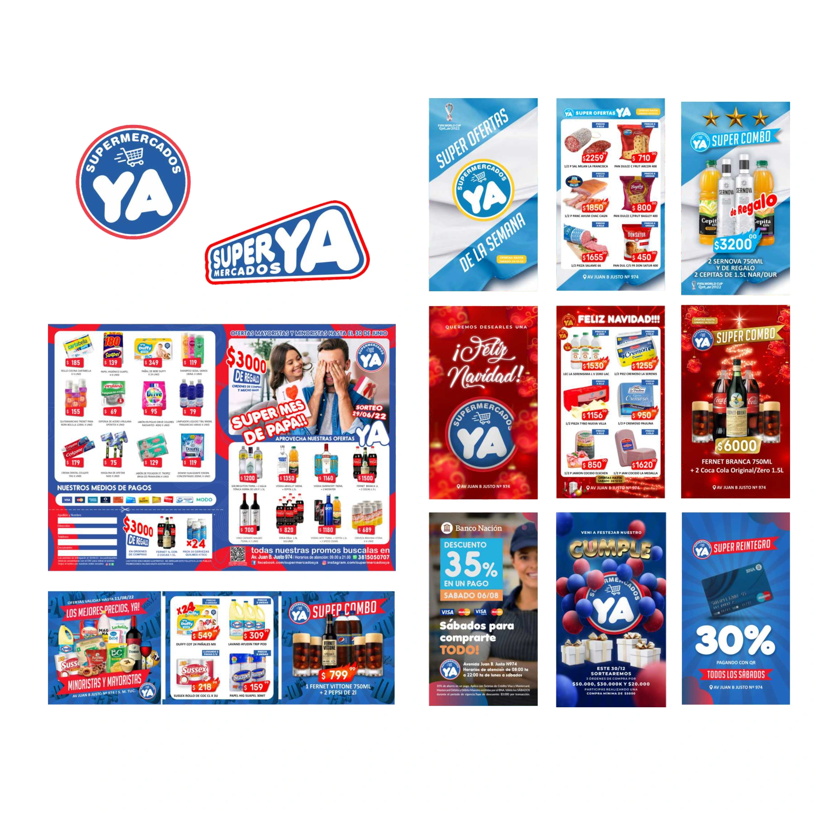
SUPER YA.
↗Marca y revista promocional.
NO SOLO
UNA IMAGEN.
UNA EXPERIENCIA.
Trabajo la identidad visual como un sistema: coherente en cada pieza, flexible para cada soporte y reconocible en el mundo real.
VOLVER A EXPLORAR LOS PROYECTOS03 / SIGUIENTE PASO
HAGAMOS
ALGO QUE IMPACTE.
Identidad, diseño, comunicación y proyectos que necesitan una mirada integral. Para conversar sobre un proyecto u oportunidad laboral: parisottoluis@gmail.com.